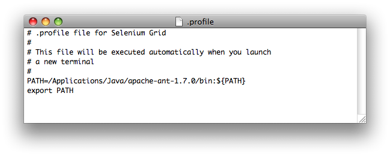
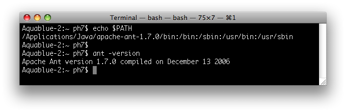

Here are detailed, step by step instructions on how to install Selenium Grid, on an OS X machine from Apple.
The appropriate JDK is shipped by default on any Mac 10.X installation,
and should be available out-of-the-box.
You can double-check this by openning a terminal window and
running java -version

The command output should indicate that a 1.5 version of the JDK is available. If not, insert Apple OS X install CD in your machine and re-install the developer tools.
Check that you have the right Ant version (1.7) by running in a terminal:
ant -version
Most likely you are all set if you are running OS X Leopard: Ant 1.7 is provided as part of the default install.
If you are running an earlier version of Mac OS X, and have a 1.6 Ant version (or earlier), install Ant 1.7 as explained in step 2a.
/Applications/Java/apache-ant-1.7.0:

You then need to modify your PATH so that your
system finds first the
freshly installed ant launcher.
You can do this by going to a Terminal window and:
cd
and then the ENTER key), and open the
.profile file.

.profile file so that the freshly installed
Ant version 1.7 is first in your path:

.profile file (Menu "File"->"Save")
PATH is set accordingly and that you
pick up the right Ant version:

Download the latest version of Selenium Grid at the following URL
Unzip the file into a directory of your choosing
(Note: we will refer to this directory as SELENIUM_GRID_HOME).
Verify the Selenium Grid install
From the terminal window run the following command
You should see the following results
From the terminal window run the following command